산림산업기사 (2018-04-28 기출문제)
1과목: 조림학
1. 발아율을 나타내는 계산식은?
- (시험한 종자의 수 ÷ 발아한 종자의 수)×100%
- (발아한 종자의 수 ÷ 시험한 종자의 수)×100%
- (발아한 종자의 수 - 시험한·종자의 수)×100%
- (시험한 종자의 수 - 발아한 종자의 수)x100%
(정답률: 79%)

2. 자웅이주에 해당하는 수종으로만 나열된 것 은?
- 주목, 소나무
- 주목, 은행나무
- 잣나무, 은행나무
- 잣나무, 상수리나무
(정답률: 74%)
3. 제벌에 대한 설명으로 옳지 않은 것은?
- 조림목이 임관을 형성한 뒤부터 간벌하기 전에 실행한다.
- 조림목 하나하나의 성장보다는 임상을 정비하여 임분 전체의 형질을 향상시키는데 목적을 둔다.
- 조림수종이 그 임지에 적합하여 성림이 잘될 것 같으면 침입한 천연생목은 원칙적으로 거한다.
- 비용만 들고 산물은 거의 이용되지 않으므로 임분의 형질향상을 위해 실시시기를 늦추는 것이 유리하다.
(정답률: 83%)
4. 참나무류에 대한 지위지수(A)와 경사도(B)의 관계를 가장 잘 나타낸 것은?
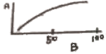
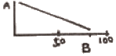
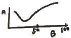
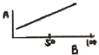
(정답률: 77%)
5. 숲을 구성하고 있는 나무의 나이가 같거나 거의 비슷하게 구성된 산림은?
- 혼효림
- 천연림
- 이령림
- 동령림
(정답률: 89%)
6. 개별천연하종갱신을 적용하여 후계림을 조성하는데 적절하지 않은 수종은?
- 잣나무
- 소나무
- 오리나무
- 물푸레나무
(정답률: 55%)
7. 삽목 번식이 가장 잘되는 수종은?
- 개나리, 회양목
- 밤나무, 소나무
- 낙우송, 느티나무
- 두릅나무, 아까시나무
(정답률: 82%)
8. 참나무류의 숲을 왜림작업에 의해 갱신하려고 할 때 적절한 벌채 시기는?
- 연중 실시
- 성장 휴지기
- 성장 왕성기
- 성장휴지기 2~3개월 전
(정답률: 73%)
9. 솎아베기(간벌)에 대한 설명으로 옳지 않은 것은?
- 임분의 수평 구조를 개선하여 임분 안정화 도모
- 임연부를 보호 관리하고 자연고사에 의한 손실을 방지
- 수령과 생장이 증가됨에 따라 확장되는 일정한 생육공간을 조절
- 임분 구성에 부적당하거나 해로운 나무를 제거하여 임분의 가치 증진
(정답률: 63%)
10. 묘포적지 선정 시 고려 사항으로 옳지 않은 것은?
- 교통과 노동력의 공급 조건을 검토한다.
- 위도가 높고 한랭한 지역은 동남향이 유리하다.
- 보통 묘포토양은 평탄한 지역의 점토질 토양이 유리하다.
- 봄철 파종 시 건조조건이 문제가 되므로 관개 및 배수의 편리성을 검토한다.
(정답률: 78%)
11. 수목이 이용 가능한 토양의 수분은?
- 흡습수
- 중력수
- 결합수
- 모관수
(정답률: 86%)
12. 산벌작업에서 하종벌을 적용하기에 가장 적절한 시기는?
- 유령기 때
- 갱신 주기 때
- 결실량이 많을 때
- 하층식생이 많은 때
(정답률: 67%)
13. 수목에 필요한 무기영양 중에서 질소와 인 다음으로 결핍되기 쉬우며, 결핍증상으로 화현상이 나타나며 뿌리썩음병이 잘 걸리게 되는 원소는?
- 칼륨
- 질소
- 붕소
- 알루미늄
(정답률: 84%)
14. 발아촉진 방법이(아닌)것은?
- 냉수침적법
- 노천매장법
- X선 처리법
- 화학약품 처리
(정답률: 74%)
15. 어떤 수목이 1000cc의 물을 증산시켜 2g의 건물질을 생산하였다. 이에 대한 설명으로 옳지 않은 것은?
- 중산능은 1이다.
- 증산비는 1:500이다.
- 증산계수는 500이다
- 1g의 건물질을 만드는 증산량은 500cc이다.
(정답률: 81%)
16. 주요 조림 수종인 잣나무에 대한 설명으로 옳지 않는 것은?
- 내한성 이 강하다.
- 잎은 5개씩 모여 난다.
- 충청 이남 지역에 주로 식재한다.
- 학명은 Pinus koraiensis Siebold & Zucc.이다.
(정답률: 75%)
17. 양수에 해당하는 수종은?
- 주목, 비자나무
- 편백, 솔송나무
- 소나무, 사시나무
- 전나무, 가문비나무
(정답률: 76%)
18. 식재거리가 같을 때 정삼각형 식재는 정방형 식재보다 몇 %나 더 묘목을 식재하는가?
- 7.5
- 10.0
- 12.0
- 15.5
(정답률: 82%)
19. 결실주기가 가장 긴 수종은?
- Alnus japonica
- Larix kaempferi
- Zelkova serrata
- Cryptomeria japonica
(정답률: 66%)
20. 양수 수종을 조림할 경우 밑깎기 작업으로 가장 적합한 방법은?
- 줄깎기
- 평깎기
- 둘레깎기
- 전면깎기
(정답률: 74%)
2과목: 산림보호학
21. 한해(旱害: drought injury)의 피해를 가장 적게 받는 수종은?
- 소나무
- 오리나무
- 버드나무
- 포플러류
(정답률: 68%)
22. 토양소독을 위한 물리적 방법이 아닌 것은?
- 소토법
- 훈증법
- 전기가열법
- 증기소독법
(정답률: 64%)
23. 윤작은 어떤 병원균의 방제에 효과가 좋은가?
- 기주범위가 좁고, 기주가 없이도 오래 생존하는 것
- 기주범위가 넓고, 기주가 없이도 오래 생존하는 것
- 기주범위가 넓고, 기주가 없으면 오래 생존하지 못하는 것
- 기주범위가 좁고, 기주가 없으면 오래 생존하지 못하는 것
(정답률: 72%)
24. 미국흰불나방이 월동하는 형태는?
- 알
- 성충
- 유충
- 번데기
(정답률: 82%)
25. 곤충의 다리에 대한 설명으로 옳지 않은 것은?
- 곤충에도 발톱이 있다.
- 다리는 가슴에 붙어 있다.
- 곤충의 다리는 대부분 3마디이다.
- 다리의 기부에서부터 볼 때 마지막 마디는 발마디(tarsus)이다.
(정답률: 72%)
26. 밤나무 줄기마름병의 방제 방법으로 가장 효과적인 것은?
- 매개충을 구제한다.
- 중간기주를 제거한다.
- 병든 부위를 도려내고 도포제를 발라준다.
- 항생제 계통 약제로 나무주사를 실시한다.
(정답률: 60%)
27. 내화력이 가장 약한 수종은?
- 은행나무
- 고로쇠나무
- 가문비나무
- 아까시 나무
(정답률: 53%)
28. 향나무 녹병균(녹포자)이 배나무에서 향나무로 전파하는 시기는?
- 12~2월경
- 3~5월경
- 6~8월경
- 9~11월경
(정답률: 65%)
29. 주로 기공 감염을 하는 수목병은?
- 소나무 잎떨림병
- 밤나무 줄기마름병
- 오동나무 빗자루병
- 뽕나무 자줏빛날개무늬병
(정답률: 62%)
30. 천공성 해충에 해당하는 것은?
- 솔나방
- 독나방
- 박쥐 나방
- 참나무 재주나방
(정답률: 76%)
31. 정주성 내부기생선충 종으로 정착한 주변 세포를 비정상적으로 비대하게 만들어 영양저장고로 이용하는 기작을 가지고 있으며 밤나무, 오동나무 등의 묘목을 재배한 묘포에서 많이 발생하는 것은?
- 스턴트선충
- 뿌리혹선충
- 소나무재선충
- 뿌리썩이선충
(정답률: 77%)
32. 소나무 재선충병의 방제법으로 옳지 않은 것은?
- 피해목을 훈증한다.
- 광릉긴나무좀을 구제한다.
- 이목을 설치하여 소각 및 패쇄한다.
- 소나무 주변으로 토양관주를 실시한다.
(정답률: 71%)
33. 솔껍질깍지벌레의 생태적 특성으로 옳지 않은 것은?
- 부화약충의 발생시기는 4월경이다
- 연 1회 발생하며 후약충으로 월동한다
- 암컷은 알주머니를 형성한 후 산란한다.
- 수컷은 완전변태를 하며 암컷은 불완전변태를 한다.
(정답률: 42%)
34. 대추나무 빗자루병의 방제법으로 옳지 않은 것은?
- 썩덩나무노린재를 구제한다.
- 옥시테트라사이클린을 수간에 주입한다.
- 병든 가지 와 병든 줄기는 모두 소각한다.
- 병든 나무는 분주를 통해 퍼져 나가므로 반드시 병든 나무도 제거해야 한다.
(정답률: 77%)
35. 유충으로 월동하는 해충은?
- 소나무좀
- 솔잎혹파리
- 참나무재주나방
- 오리나무잎벌레
(정답률: 70%)
36. 유충기가 가장 긴 해충은?
- 솔나방
- 매미나방
- 어스렝이나방
- 미국흰불나방
(정답률: 63%)
37. 참나무 시들음병의 전반 경로는?
- 물
- 바람
- 종자
- 매개충
(정답률: 57%)
38. 오리나무잎벌레에 대한 설명으로 옳지 않은 것은?
- 번데기를 형성한다
- 1년에 1회 발생한다.
- 유충과 성충이 모두 잎을 가해한다
- 낙엽이나 지피물 밑에서 유충으로 월동한다.
(정답률: 50%)
39. 군집생활을 하며 임목을 고사시키는 조류는?
- 할매새
- 동박새
- 왜가리
- 산비둘기
(정답률: 80%)
40. 단위생식에 의해서 증식하는 해충은?
- 솔잎혹파리
- 밤나무혹벌
- 오리나무잎벌레
- 아까시잎혹파리
(정답률: 58%)
3과목: 임업경영학
41. 산림기본법에 명시된 산림경영계획으로 옳은 것은?
- 산림기본계획, 지역산림계획
- 산림기본계획, 광역산림계획
- 산림종합계획, 지역산림계획
- 산림종합계획, 광역산림계획
(정답률: 78%)
42. 주로 원가관리 목적과 재고자산 평가 등의 용도로 활용하는 원가는?
- 표준원가
- 변동원가
- 고정원가
- 기회원가
(정답률: 70%)
43. 국유림경영계획 실행상황을 평가하는데 해당되지 않는 것은?
- 예비평가
- 중간평가
- 사전평가
- 최종평가
(정답률: 62%)
44. 매년 말에 r씩 영구히 수득할 수 있는 무한연년이자의 전가합계식(K)은? (단, p = 연이율)
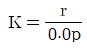
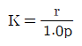
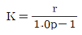
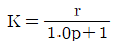
(정답률: 49%)
45. 산림평가에서 유동자본에 해당하지 않는 것은?
- 조림비
- 관리비
- 사업비
- 제재소 설치비
(정답률: 72%)
46. 산림조사에 관한 설명으로 옳지 않은 것은?
- 지위는 임지생산력 판단 지표이다.
- 임종은 침엽수림, 활엽수림, 침활혼효림으로 구분한다.
- 혼효율은 수종별 입목재적, 본수, 수관점유면적 비율에 의하여 백분율로 산정한다.
- 소밀도는 조사면적에 대한 입목의 수관면적이 차지하는 비율을 백분율로 표시한다.
(정답률: 55%)
47. 다음과 같은 이령림의 평균 임령은?
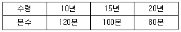
- 약 13.8년
- 약 14.3년
- 약 14.8년
- 약 15.3년
(정답률: 69%)
48. 일반적으로 사용하는 원가 비교 방법이 아닌 것은?
- 기간비교
- 상호비교
- 표준실제비교
- 부가가치비교
(정답률: 68%)
49. 윤벌기와 관련된 작업으로 가장 적합한 것은?
- 개벌작업
- 택벌작업
- 모수작업
- 왜림작업
(정답률: 53%)
50. 사유림의 규모가 15ha일 때 해당하는 경영형태는?
- 농가임업
- 부업적임업
- 겸업적임업
- 주업적임업
(정답률: 56%)
51. 산림경영의 지도원칙 중 보속성의 원칙에 대한 설명으로 옳은 것은?
- 공공경제성의 원칙·경제후생의 원칙이라고도 한다.
- 최소 비용에 대한 최대 효과의 원칙이라고 할 수 있다
- 자연에 순응하고 어울리는 복지적경영을 해야 하는 고차원적 원칙이다.
- 산림에서 매년 수확을 균등적, 항상적으로 계속되도록 경영하려는 원칙이다.
(정답률: 82%)
52. 수간석해의 방법으로 총재적을 얻을 때 고려하지 않아도 되는 것은?
- 근주재적
- 지조재적
- 결정간재적
- 초단부재적
(정답률: 54%)
53. 벌기 이상의 임목 평가법으로 가장 적절한 것은?
- Glaser법
- 임목비용가법
- 임목기망가법
- 시장가역산법
(정답률: 62%)
54. 다음 ( ) 안에 알맞은 것은?
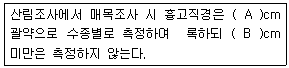
- A : 2, B : 2
- A : 2, B : 6
- A : 6, B : 2
- A : 6, B : 6
(정답률: 75%)
55. 감가가 발생하는 요인 중 물리적 감가에 해당되는 것은?
- 부적응에 의한 감가
- 진부화에 의한 감가
- 경제적 요인에 의한 감가
- 마모, 손상 및 오손에 의한 감가
(정답률: 81%)
56. 다음 도표에서 손익분기점은?
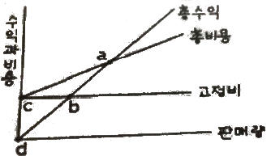
- a
- b
- c
- d
(정답률: 85%)
57. 법정림에 대한 설명으로 옳은 것은?
- 법으로 정해진 산림
- 목재 수확을 위해 지정한 산림
- 해마다 균등하게 목재를 수확할 수 있는 산림
- 산림 파괴를 막기 위해 정부가 보호하는 산림
(정답률: 72%)
58. 단위면적에서 수확되는 목재생산량이 최대가 되는 연령을 벌기령으로 하는 방법은?
- 수익률 최대의 벌기령
- 화폐수익 최대의 벌기령
- 재적수확 최대의 벌기령
- 토지 순수익 최대의 벌기령
(정답률: 81%)
59. 현 산림축적이 ha당 1000m3이고 연평균 생장률이 3% 일 때, 10년 후 산림 축적을 복리식 후가계산식으로 계산하면?
- 약 131m3
- 약 13⑤m3
- 약 1344m3
- 약 13786m3
(정답률: 69%)
60. 어떤 입목의 수피 외직경이 14cm이고, 수피 두께가 5mm일대 수피 내직경은?
- 12.0cm
- 12.5cm
- 13.0cm
- 13.5cm
(정답률: 62%)
4과목: 산림공학
61. 한 측점에서 많은 점의 시준이 안 되고, 길고 좁은 지역의 측량에 주로 이용되는 방법은?
- 도선법
- 방사법
- 전방교회법
- 측방교회법
(정답률: 57%)
62. 임도의 종단곡선 기준으로 옳은 것은? (단, 설계속도 40km/시간인 경우)
- 종단곡선의 길이 : 20m 이상
- 종단곡선의 길이 : 30m 이상
- 종단곡선의 반경 : 250m 이상
- 종단곡선의 반경 : 450m 이상
(정답률: 51%)
63. 임도의 평면선형에서 사용되는 곡선이 아닌 것은?
- 단곡선
- 이중곡선
- 복심곡선
- 배향곡선
(정답률: 63%)
64. 자연적인 현상에 의한 황폐지 유형이 아닌 것은?
- 훼손지
- 붕괴지
- 밀린땅
- 황폐계류
(정답률: 75%)
65. 벌목작업 시 벌도목이 인근 나무에 걸렸을 때 해결방법으로 가장 적합한 것은?
- 걸려있는 인근 나무를 베도록 한다.
- 걸치고 있는 나무를 별도하여 함께 넘긴다.
- 걸린 나무에 올라간 흔들어 떨어뜨리도록 한다
- 지렛대를 사용하여 걸린 나무를 돌려 낙하되도록 한다.
(정답률: 78%)
66. 계류의 상류부에 축설하는 시설물로서 반수면만을 축조하는 공사은?
- 사방댐
- 골막이
- 밑막이
- 기슭막이
(정답률: 66%)
67. 대경재 벌목 방법으로 옳지 않은 것은?
- 쐐기나 지렛대를 이용한다.
- 기계톱에 무리한 힘을 가하지 않는다.
- 바버 체어(baber chair)가 발생하도록 작업한다.
- 목재 손실을 방지하기 위해 옆면노치 자르기를 한다.
(정답률: 79%)
68. 도저의 블레이드면의 방향이 진행방향의 중심선에 대하여 20~30°의 경사가 진 것은?
- 불도저
- 틸트도저
- 앵글도저
- 스트레이트도저
(정답률: 76%)
69. 유역내 강수량 관측지점의 면적이 각각 100ha, 150ha, 250ha이다. 각각의 면적에서 측정한 강수량이 각각 110mm, 100mm, 115mm일 때, Thiessen 법으로 계산한 평균강수량은?
- 약 100mm
- 약 1⑤mm
- 약 110mm
- 약 115mm
(정답률: 63%)
70. 반출할 목재의 길이가 10m이고, 임도의 나비가 5m일 때 최소곡선반지름은?
- 3m
- 4m
- 5m
- 6m
(정답률: 71%)
71. 산지사방의 목표와 거리가 먼 것은?
- 산사태의 방지
- 붕괴의 확대방지
- 표토침식의 방지
- 계상침식의 방지
(정답률: 60%)
72. 입도설계업무 순서로 옳은 것은?
- 답사→예비조사→예측→실측→설계도 작성→공사수량의 산출→설계서 작성
- 답사→예측→예비조사→실측→설계도 작성→공사수량의 산출→설계서 작성
- 예비조사→예측→답사→실측→설계도 작성→공사수량의 산출→설계서 작성
- 예비조사→답사→예측→실측→설계도 작성→공사수량의 산출→설계서 작성
(정답률: 73%)
73. 와이어로프에 대한 설명으로 옳은 것은?
- 임업용 와이어로프는 스트랜드의 수가 4개인 것을 많이 사용한다.
- 보통꼬임은 꼬임이 안정되어 킹크가 생기기 어렵고 취급이 용이하다.
- 랑꼬임은 꼬임이 풀리기 쉬어 킹크가 일어나기 쉽고 보통꼬임보다 강도가 낮다.
- 와이어의 꼬임과 스트랜드의 꼬임이 동일방향으로 된 것을 보통꼬임이라 한다.
(정답률: 57%)
74. 씨뿌리기공법에 해당되지 않은 것은?
- 섶뿌리기
- 점뿌리기
- 흩어뿌리기
- 분사식씨뿌리기
(정답률: 73%)
75. 돌망태에 관한 설명으로 옳지 않은 것은?
- 작업실행이 쉽다.
- 표면의 조도가 크다.
- 가설공사에 주로 사용된다.
- 내구성이 길어 영구적이다.
(정답률: 75%)
76. 임도의 노체를 시공하는 순서로 옳은 것은?
- 노상 → 노반 → 기층 → 표층
- 노반 → 노상 → 기층 → 표층
- 노상 → 노반 → 표층 → 기층
- 노반 → 노상 → 표층 → 기층
(정답률: 73%)
77. 등고선 간격이 10m인 1:25000 지형도에서 종단 기울기가 8%가 되게 노선을 그릴 때 도상의 수평거리는?
- 4mm
- 5mm
- 8mm
- 10mm
(정답률: 42%)
78. 돌을 다듬을 때 앞면·길이·뒷면·접촉부 및 허리치기의 치수를 특별한 규격에 맞도록하여 만든 석재는?
- 깬돌
- 사석
- 견치돌
- 야면석
(정답률: 83%)
79. 퇴사울타리를 설치할 때 기준높이는?
- 0.5m
- 1.0m
- 1.5m
- 2.0m
(정답률: 50%)
80. 임도 개설 시 m3 당 임목수집비를 고려할 때 효율성과 경제성이 가장 큰 위치는?
- 산복부
- 능선부
- 계곡부
- 복합지역
(정답률: 50%)